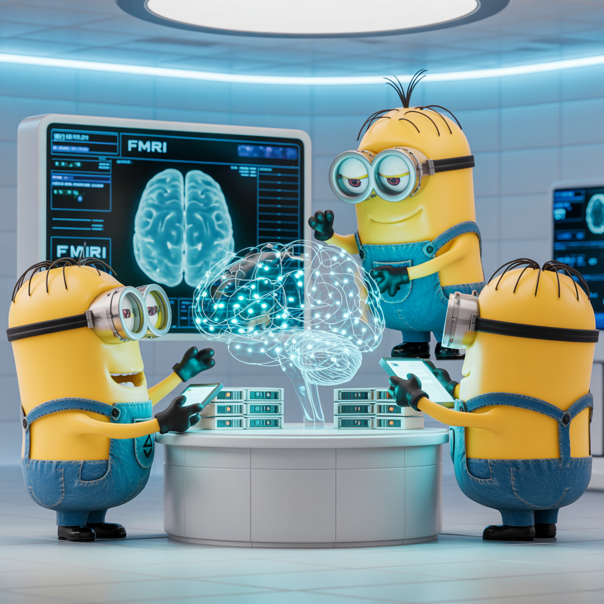

CONFORM:
A Project to Create Crowd-Sourced Open Neuroscience fMRI Foundation Models

CONFORM is built on these three amazing works:
Abstract
We propose CONFORM (Crowd-Sourced Open Neuroscience fMRI Foundation Model), a project that will bring together recent advances in neural data processing and analysis with a novel, crowd-sourced infrastructure. This transformative approach will overcome several current challenges in creating a foundational human fMRI model for vision: collecting massive amounts of data from a handful of participants is neither scalable nor sustainable; the number of participants is small for such datasets; stimulus diversity is limited; and generalizability to different populations is poor. CONFORM will overcome these limitations by combining a powerful generative denoising method (SNAP), a scalable framework for aggregating existing fMRI datasets (MOSAIC), and a meta-learning model that enables generalization with much smaller data from new participants (BraInCoRL). Our collabo- rative effort will produce models built on unprecedented scale and diversity—ultimately with hundreds of participants and hundreds of thousands of naturalistic image and movie stimuli—and provide the tools for continuous expansion of the underlying dataset. This “crowd-sourced” approach will allow many more researchers to leverage state-of-the-art NeuroAI methods using the scale of data they typically collect, democratizing access to powerful models and accelerating scientific discovery for a wide range of neuroscientific domains and populations.
Background and Introduction
Creating a foundational human fMRI model is a critical next step for extending modern neuroAI. To achieve this, the model
must generalize across both individuals and tasks, which requires a large volume of data with many participants,
observations, and diverse stimuli. Historically, a significant impediment has been that most fMRI studies have small
sample sizes and a low number of observations per session; the latter also leading to poor stimulus diversity. As a
result, typical fMRI experiments sample only a tiny fraction of the human population and the vast space of real-world
visual, auditory, or linguistic inputs. These limitations impeded efforts to draw robust conclusions from fMRI data and
to integrate insights from modern AI systems into our understanding of the human brain—a challenge that is exacerbated by
the inherently noisy BOLD signal.
In visual neuroscience, a first step in meeting this challenge has already been taken through the collection of
large-scale fMRI datasets, which typically include brain responses from a small number of participants each scanned
over many repeated sessions (15-40 hours-long sessions), who view a large number of stimuli (5000-10,000 stimuli per
participant; e.g., BOLD5000, NSD, THINGS, NOD). This approach of ``deeply sampling'' a small number of participants
increases the statistical power of experiments, and enables powerful parameter-rich, within-subject models. While
this approach of collecting large datasets from small groups of participants has led to hundreds of publications and
impactful discoveries, even this strategy is neither sustainable nor scalable for both scientific and practical reasons:
1. Successful data collection at this scale depends on
Moreover, controlled tasks and stimulus selection methods have further reduced diversity in the visual
images included in each dataset: NSD uses only COCO images (only 80 object categories~\cite{lin2014microsoft}, which
leave gaps in many regions of natural image space), BOLD5000 uses COCO as well as SUN and ImageNetimages, and THINGS
uses a larger number of ``concepts'', but depicted as single cropped objects that show little context.
4. Creating the infrastructure for data management and distribution is a considerable technical challenge. Short-term it requires a robust and replicable data processing pipeline and a reliable platform for data distribution. Long-term it requires stability—years later the distribution website should remain readily accessible.
5. The monetary costs of collecting data can present a challenge to any single lab (e.g., five participants across 25 x one~hour scans could easily cost on the order of \$100,000) and risks over-representing the interests of the small number of labs with the necessary resources.
Despite their increased scale relative to standard fMRI studies, these datasets still present significant challenges in the construction of NeuroAI models. The number of observations and participants is still small for purposes of model training, and data quality is dependent on preprocessing methods. More importantly, prediction accuracy and decoding performance are typically high only when trained and tested within the same participant—due to inherent structural and functional differences between individual brains and, at present, weak methods for generalizing across them. Consequently, when models are applied across participants, even within the same study, their performance and decoding capabilities decrease dramatically.
Workshop Paper
BibTeX
@inproceedings{2025metalearning,
title={Meta-Learning an In-Context Transformer Model of Human Higher Visual Cortex},
author={Muquan Yu and Mu Nan and Hossein Adeli and Jacob S. Prince and John A. Pyles and Leila Wehbe and Margaret Marie Henderson and Michael J. Tarr and Andrew Luo},
booktitle={The Thirty-ninth Annual Conference on Neural Information Processing Systems},
year={2025},
url={https://openreview.net/forum?id=B3iPTZh7Za}
}